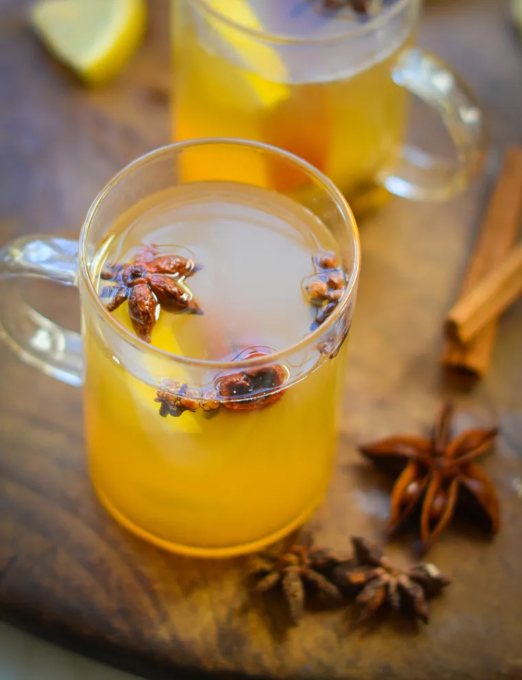

Hot Toddy

Description:
A hot toddy is a classic and warming whiskey cocktail.
Ingredients:
- 2 oz (¼ cup) bourbon
- 1 tablespoon fresh lemon juice (from 1 lemon)
- 1 tablespoon honey
- Boiling water, to fill a mug (6 to 8 oz)
- Cinnamon stick for garnish
- 3 to 4 cloves for garnish
- 1 star anise pod for garnish
Steps:
-
Combine the bourbon, lemon juice, and honey in a mug and add the boiling water (use more or less, depending on how strong you'd like the drink to be). Stir until the honey is dissolved and the ingredients are well combined, 10 to 15 seconds. Garnish with the cinnamon stick, cloves, and star anise pod.